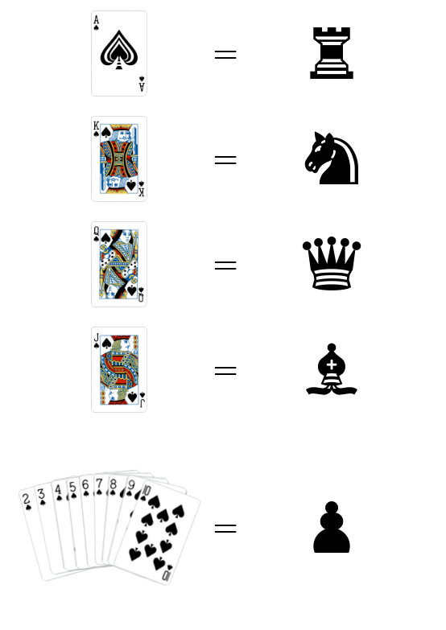

Pawn-Queen Double Draw
About me
My name is Willi, I'm a 26 years old developer from Germany.I created this game for the Pokerstars PSPC #MyChessPokerGame challenge. I personally loved this challenge, because it combines 2 of my favorite games I'm very passionate about.
I started playing Poker recreationally almost 10 years ago, and I still play frequently, with friends or online.
Same goes with Chess, which I started to fall in love with a few years ago after having known the rules for almost all my life.
I hope you have as much fun reviewing my submission as I had creating it.
The Game
Players play hands of poker, but showdowns happen on the chess board.
In the first phase of the game, players try to build a good hand in a similar way to 2-7 Triple draw, with betting and drawing rounds.
If the game comes to a showdown, instead of comparing hands, players exchange their cards for chess pieces. These, along with a king, are then placed onto a chess board and the winner of the pot is determined by playing chess.
In the first phase of the game, players try to build a good hand in a similar way to 2-7 Triple draw, with betting and drawing rounds.
If the game comes to a showdown, instead of comparing hands, players exchange their cards for chess pieces. These, along with a king, are then placed onto a chess board and the winner of the pot is determined by playing chess.

Video
This video explains the rules of the game.The rules
Prequesits
This is a heads-up gameYou will need:
- A standard deck of 52 cards
- Poker chips
- A full set of chess pieces
- A chess board
- A dealer button
- Optionally: A chess clock
Set Up
- Split the deck into red and black cards. Each player gets one half.
- Have each player remove one queen from their deck.
- Give each player one color of chess pieces
-
Decide on starting stack and blind structure.
Hands in this game can take a long time, so a fast and short structure is reccomended. - Determine who gets the dealer button initially
- If you're using a chess clock, agree on a time structure.
Blinds
This game is played with blinds. The player left of the dealer button posts the small blind, and the dealer posts the big blind.After each hand, the dealer button switches between both players.
The Deal
After the blinds are posted, both players draw 5 cards from their half of the deck.The small blind is first to act. They have the option of folding, calling the big blind, or raising.
Depending on the action of the small blind, the dealer can then either fold, check, call or raise. If either player folds, the winner collects the pot, the decks are reshuffled and the dealer button is passed on.
Drawing
If all bets are called, the players enter the first drawing round.Both players can select which (if any) cards they want to discard. These cards are removed from the game until the next hand.
After both players have discarded cards, they draw from their deck until they hold 5 cards again.
So, if you discard 2 cards, you draw 2 new ones to fill your hand.
Of course, players do not have to tell anyone which cards they have discarded, but the number of cards they discard has to be disclosed.
Continuing
After the first round of drawing, another round of betting is opened, with the small blind first to act.Several rounds of betting and drawing happen, the entire first round looking like this:
- Blinds
- Initial Draw
- Betting round #1
- Drawing round #1
- Betting round #2
- Drawing round #2
- Betting round #3
Showdown
If none of the players have folded up to this point, the showdown begins.First, both players receive their king-piece. With the small blind first to act, they then take turns placing pieces on the board, either by placing their king, or by publicly exchanging one of their cards for a piece, and placing that.
Here you see the exchange table from cards to pieces.
It is reccomendended to write this down for both players to easily see during the game.
Players may only place pieces on their own half of the board (bottom 4 rows).
During placement, no piece may be placed in such a way as to put the opposing king in check. Neither may a king itself be placed directly into a checked position.
After all pieces have been places on the board, one more round of betting is opened, with the small blind being first to act.
During placement, no piece may be placed in such a way as to put the opposing king in check. Neither may a king itself be placed directly into a checked position.
After all pieces have been places on the board, one more round of betting is opened, with the small blind being first to act.
Chess
The rest of the hand consists of playing chess by standard rules. The small blind goes first.Players can agree to draw or resign at any point during the game.
After a winner is determined through resignation or check mate, they get to collect the pot and the hand is over.
Draws result in a split pot, where each player receives half of the money in the middle.
End of hand
After the round of chess is finished, the hand is over.Both decks are shuffled, the chess pieces are collected and the dealer button is passed on. A new hand then starts, beginning with the blinds.
If either player is out of chips, the other player wins the game!
Video #2
Have Tim and Tom take you through some hightlights from this years' final table at the Chess Poker Tour in Berlin!Fin
This concludes the description of my game. Anything below this line is added content, some pictures from development, and interesting variations to the game.Thank you for reading and considering my submission!
Variation without king
During development of this game, we toyed with the idea of removing the king-piece from the game and playing chess death match, if you will, without check or checkmate.To accomodate this, the rules only have to change slightly.
- Players don't remove a queen from their deck at the start of the game.
-
The king-pieces are used as a secondary queen-pieces, enabling both players to theoretically have 2 queens in their hand and on the board.
Both pieces then act as a queen only, with no check, checkmate, or move restriction on the former king-piece. (Don't get all this confused with the king-card, we're talking about the chess piece only.) - The chess round ends when either player has lost all their pieces.
-
When the game has gone stale (no piece taken in 10 turns), the round is decided by adding up the value of each player's pieces still on the board.
Suggested values are:
Queen: +4
Rook: +3
Knight: +2
Bishop: +1
Pawn: +0
The player with the most points takes the pot.
Variation to allow betting during the chess game
Another interesting variation is to allow betting rounds during the chess phase. The following rule could be introduced:-
After a player has beaten one of the opposing chess pieces on the board, they have the option to bet or check.
Depending on the action, the other player can then fold, check, call or raise. The action goes around until all bets are called or a player has folded. If neither player folds,the chess game continues as normal, with no player being robbed of their turn.
Variation on the poker rules
Instead of playing the first phase of the game in a way similar to 2-7 Triple Draw, you could theoretically play any variant of poker.For example you could play by the rules of PLO or NLHE to build your hands, and then still show down on a chess board.